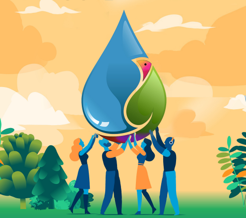
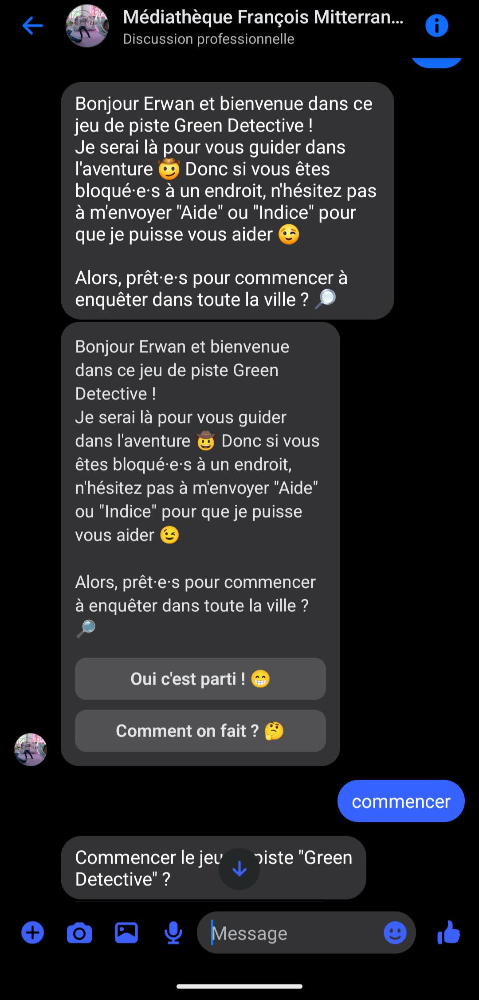

Le projet
Dans le cadre du festival « Ça coule de ressources », consacré à la sensibilisation aux gestes durables, la ville du Relecq-Kerhuon a fait appel à moi pour créer un jeu de piste en extérieur permettant de découvrir la ville à travers différentes énigmes. Les participants se rendaient au point de départ, à la médiathèque, pour recevoir les instructions du jeu, puis se laissaient guider en autonomie.

Comment ça marche ?
Les joueurs étaient guidés d'énigme en énigme par un chatbot. Il fallait se rendre à 10 points clés de la ville, puis bien observer les alentours pour résoudre les énigmes et faire avancer l'enquête. Ce chatbot automatisé faisait office de maître du jeu : il racontait l'histoire, validait les bonnes réponses pour passer à l'étape suivante et donnait des indices aux joueurs bloqués.

Ils en parlent
Présentation de l'événement sur le site officiel de la ville.
Les lauréates du jeu dans Le Télégramme.
Article sur l'événement dans Ouest-France.